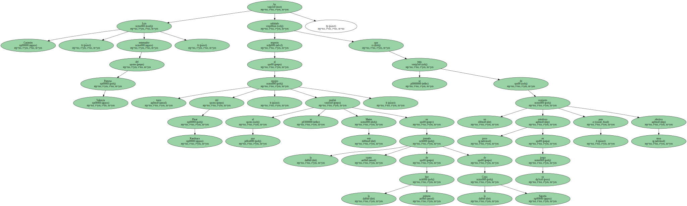
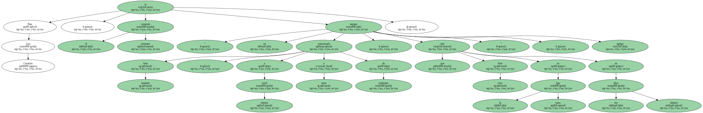
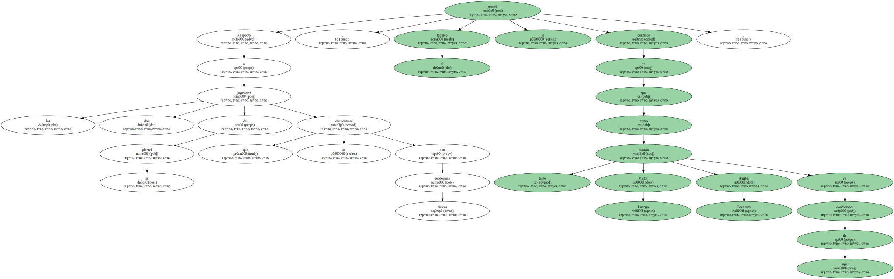
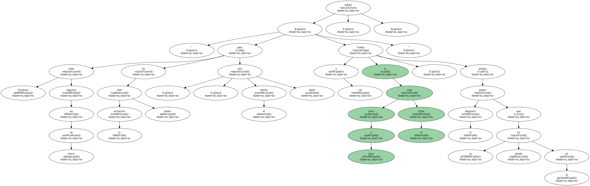
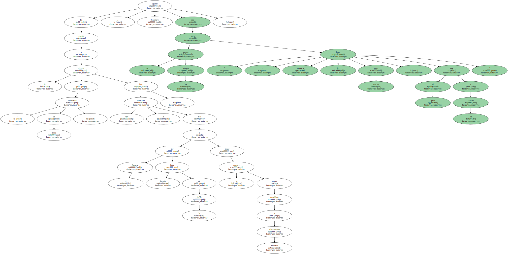
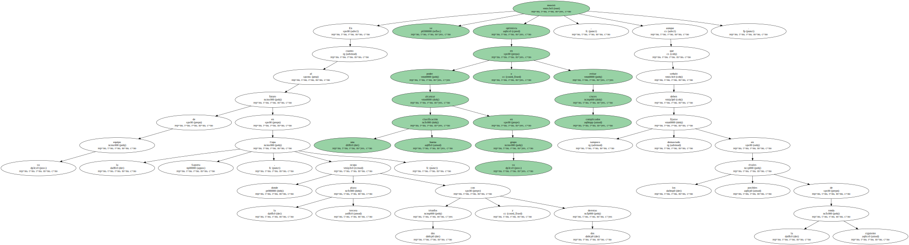
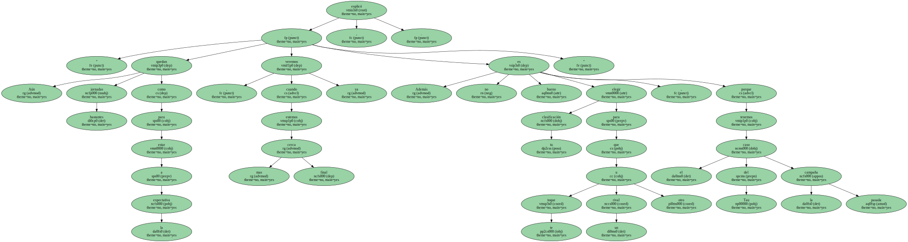

Luis Casimiro , entrenador del Pamesa Valencia , ha señalado respecto al equipo turco del Pinar Karsikaya , al que se medirá este Martes en la cuarta jornada de la primera fase de la Copa Saporta , que se trata de un conjunto poco ortodoxo en su juego , pero muy efectivo.
" Su juego se puede catalogar de poco ortodoxo pero muy efectivo , porque es muy rápido y tratan de correr siempre . Además , en el juego posicional tienen a un hombre como Oztas , que es un alero alto - 2,06 metros - , que sale a jugar tras la línea de tres puntos y que es el segundo jugador que mejor porcentajes tiene del equipo en tiros de tres " , apuntó el técnico.

Para Luis Casimiro , el conjunto otomano es " un equipo bastante bien estructurado , tanto a nivel interior y de perímetro , que está muy bien en la liga turca en los últimos años " , agregó.
Respecto a los dos jugadores de su plantel que se encuentran con problemas físicos , el técnico se mostró confiado en que tanto Víctor Luengo como Hughes Occansey estarán en condiciones de jugar.
" Occansey tiene de nuevo un esguince , pero la evolución ha sido buena , el tobillo está mejor . Vamos a ver si poco a poco coge el ritmo , porque la desgracia parece que se ha cebado en él " , señaló.
En cuanto a las molestias del capitán Víctor Luengo , el entrenador del Pamesa aseguró que se produjo una contractura en un gemelo en los últimos minutos del partido ante el Fórum de Valladolid , en la última jornada de liga.

En cuanto a la etiqueta de ' entrenador de moda ' que le han colocado , tras ser el Pamesa líder invicto de la ACB y sonar su nombre como candidato a seleccionador nacional , Casimiro apuntó que " me gustan los halagos , pero tampoco les hago mucho caso , al igual que a las críticas ".
" Trato de mantener la coherencia y el sentido común , saber lo que estamos trabajando cada día " , añadió.

En cuanto al futuro de su equipo en la Copa Saporta , donde ocupa la tercera plaza con dos triunfos y dos derrotas , se mostró optimista en poder alcanzar una buena clasificación en su grupo y evitar cruces complicados , aunque señaló que tampoco deben fijarse demasiado en los posibles rivales de la siguiente ronda.
" Aún quedan bastantes jornadas como para estar a la expectativa , cuando estemos mas cerca final ya veremos . Además no es bueno elegir tu clasificación para que te toque un rival u otro , porque tenemos el caso del Tau la pasada campaña " , explicó.
